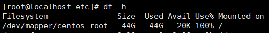

记一次服务器扩容
前情提要：
已知：系统所在分区已满且不记得上面运行了些什么服务
求：如何在不重启的情况下对目标分区进行扩容
再次感谢 niceb 同学对此次任务的技术支持
解：
查看硬盘数量和分区情况
1 | fdisk -l |
[root@localhost ~]# fdisk -l
Disk /dev/sda: 214.7 GB, 214748364800 bytes, 419430400 sectors Units = sectors of 1 * 512 = 512 bytes Sector size (logical/physical): 512 bytes / 512 bytes I/O size (minimum/optimal): 512 bytes / 512 bytes Disk label type: dos Disk identifier: 0x00004424Device Boot Start End Blocks Id System
/dev/sda1 * 2048 2099199 1048576 83 Linux
/dev/sda2 2099200 146800639 72350720 8e Linux LVMDisk /dev/mapper/centos-root: 47.0 GB, 46980399104 bytes, 91758592 sectors
Units = sectors of 1 * 512 = 512 bytes
Sector size (logical/physical): 512 bytes / 512 bytes
I/O size (minimum/optimal): 512 bytes / 512 bytesDisk /dev/mapper/centos-swap: 4160 MB, 4160749568 bytes, 8126464 sectors
Units = sectors of 1 * 512 = 512 bytes
Sector size (logical/physical): 512 bytes / 512 bytes
I/O size (minimum/optimal): 512 bytes / 512 bytesDisk /dev/mapper/centos-home: 22.9 GB, 22938648576 bytes, 44802048 sectors
Units = sectors of 1 * 512 = 512 bytes
Sector size (logical/physical): 512 bytes / 512 bytes
I/O size (minimum/optimal): 512 bytes / 512 bytes
或者使用
1 | lsblk |
[root@localhost ~]# lsblk
NAME MAJ:MIN RM SIZE RO TYPE MOUNTPOINT fd0 2:0 1 4K 0 disk sda 8:0 0 200G 0 disk ├─sda1 8:1 0 1G 0 part /boot └─sda2 8:2 0 69G 0 part ├─centos-root 253:0 0 43.8G 0 lvm / ├─centos-swap 253:1 0 3.9G 0 lvm [SWAP] └─centos-home 253:2 0 21.4G 0 lvm /home
可以看到在 sda 下还有 131G 未分配的空间
创建新分区
1 | fdisk /dev/sda |
依次输入 n / enter / enter / enter / t / L / 8e / w
[root@localhost ~]# fdisk /dev/sda
Welcome to fdisk (util-linux 2.23.2).Changes will remain in memory only, until you decide to write them.
Be careful before using the write command.Command (m for help): n
Partition type:
p primary (2 primary, 0 extended, 2 free)
e extended
Select (default p):
Using default response p
Partition number (3,4, default 3):
First sector (146800640-419430399, default 146800640):
Using default value 146800640
Last sector, +sectors or +size{K,M,G} (146800640-419430399, default 419430399):
Using default value 419430399
Partition 3 of type Linux and of size 130 GiB is setCommand (m for help): t
Partition number (1-3, default 3):
Hex code (type L to list all codes): L0 Empty 24 NEC DOS 81 Minix / old Lin bf Solaris
1 FAT12 27 Hidden NTFS Win 82 Linux swap / So c1 DRDOS/sec (FAT-
2 XENIX root 39 Plan 9 83 Linux c4 DRDOS/sec (FAT-
3 XENIX usr 3c PartitionMagic 84 OS/2 hidden C: c6 DRDOS/sec (FAT-
4 FAT16 <32M 40 Venix 80286 85 Linux extended c7 Syrinx
5 Extended 41 PPC PReP Boot 86 NTFS volume set da Non-FS data
6 FAT16 42 SFS 87 NTFS volume set db CP/M / CTOS / .
7 HPFS/NTFS/exFAT 4d QNX4.x 88 Linux plaintext de Dell Utility
8 AIX 4e QNX4.x 2nd part 8e Linux LVM df BootIt
9 AIX bootable 4f QNX4.x 3rd part 93 Amoeba e1 DOS access
a OS/2 Boot Manag 50 OnTrack DM 94 Amoeba BBT e3 DOS R/O
b W95 FAT32 51 OnTrack DM6 Aux 9f BSD/OS e4 SpeedStor
c W95 FAT32 (LBA) 52 CP/M a0 IBM Thinkpad hi eb BeOS fs
e W95 FAT16 (LBA) 53 OnTrack DM6 Aux a5 FreeBSD ee GPT
f W95 Ext’d (LBA) 54 OnTrackDM6 a6 OpenBSD ef EFI (FAT-12/16/
10 OPUS 55 EZ-Drive a7 NeXTSTEP f0 Linux/PA-RISC b
11 Hidden FAT12 56 Golden Bow a8 Darwin UFS f1 SpeedStor
12 Compaq diagnost 5c Priam Edisk a9 NetBSD f4 SpeedStor
14 Hidden FAT16 <3 61 SpeedStor ab Darwin boot f2 DOS secondary
16 Hidden FAT16 63 GNU HURD or Sys af HFS / HFS+ fb VMware VMFS
17 Hidden HPFS/NTF 64 Novell Netware b7 BSDI fs fc VMware VMKCORE
18 AST SmartSleep 65 Novell Netware b8 BSDI swap fd Linux raid auto
1b Hidden W95 FAT3 70 DiskSecure Mult bb Boot Wizard hid fe LANstep
1c Hidden W95 FAT3 75 PC/IX be Solaris boot ff BBT
1e Hidden W95 FAT1 80 Old Minix
Hex code (type L to list all codes): 8e
Changed type of partition ‘Linux’ to ‘Linux LVM’Command (m for help): w
The partition table has been altered!Calling ioctl() to re-read partition table.
WARNING: Re-reading the partition table failed with error 16: Device or resource busy.
The kernel still uses the old table. The new table will be used at
the next reboot or after you run partprobe(8) or kpartx(8)
Syncing disks.
Device Boot Start End Blocks Id System /dev/sda1 * 2048 2099199 1048576 83 Linux /dev/sda2 2099200 146800639 72350720 8e Linux LVM /dev/sda3 146800640 419430399 136314880 8e Linux LVM
The new table be used at the next reboot or after you run partprobe(8) or kpartx(8)
[root@localhost ~]# partprobe /dev/sda3Error: Could not stat device /dev/sda3 - No such file or directory.
重读分区表
1 | partprobe |
该命令没有输出
创建物理卷
1 | pvcreate /dev/sda3 |
[root@localhost ~]# pvcreate /dev/sda3
Physical volume "/dev/sda3" successfully created.
添加物理卷 /dev/sda3 到卷组 centos
1 | vgextend centos /dev/sda3 |
[root@localhost ~]# pvcreate /dev/sda3 /etc/lvm/archive/.lvm_localhost.localdomain_25674_920701457: write error failed: No space left on device
划重点 No space left on device
真的是一滴都不剩了
[root@localhost ~]# pvcreate /dev/sda3
Volume group "centos" successfully extended
此时观察一下 centos 卷组
1 | vgdisplay |
--- Volume group --- VG Name centos System ID Format lvm2 Metadata Areas 2 Metadata Sequence No 5 VG Access read/write VG Status resizable MAX LV 0 Cur LV 3 Open LV 3 Max PV 0 Cur PV 2 Act PV 2 VG Size 198.99 GiB PE Size 4.00 MiB Total PE 50942 Alloc PE / Size 17662 / 68.99 GiB Free PE / Size 33280 / 130.00 GiB VG UUID BSr9nB-EIMu-xRLk-bdo0-Z2x6-ZC4N-asZ5Gx
Free PE / Size 33280 / 130.00 GiB
将空闲的空间分配给 root 文件系统
1 | lvextend -l +100%FREE /dev/mapper/centos-root |
[root@localhost ~]# lvextend -l +100%FREE /dev/mapper/centos-root
Size of logical volume centos/root changed from 43.75 GiB (11201 extents) to 173.75 GiB (44481 extents). Logical volume centos/root successfully resized.
对 root 文件系统执行扩容
1 | xfs_growfs /dev/mapper/centos-root |
[root@localhost ~]# xfs_growfs /dev/mapper/centos-root
meta-data=/dev/mapper/centos-root isize=512 agcount=4, agsize=2867456 blks
= sectsz=512 attr=2, projid32bit=1
= crc=1 finobt=0 spinodes=0
data = bsize=4096 blocks=11469824, imaxpct=25
= sunit=0 swidth=0 blks
naming =version 2 bsize=4096 ascii-ci=0 ftype=1
log =internal bsize=4096 blocks=5600, version=2
= sectsz=512 sunit=0 blks, lazy-count=1
realtime =none extsz=4096 blocks=0, rtextents=0
data blocks changed from 11469824 to 45548544
最后看一眼磁盘使用情况
[root@localhost ~]# df -h Filesystem Size Used Avail Use% Mounted on /dev/mapper/centos-root 174G 44G 131G 26% /
OK 下班